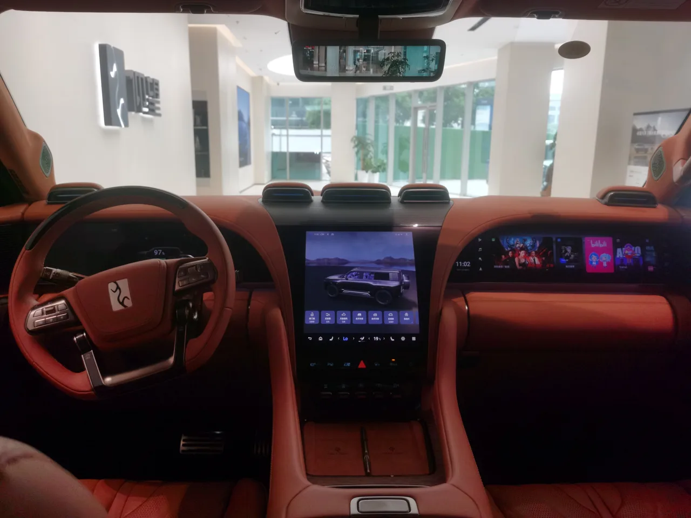
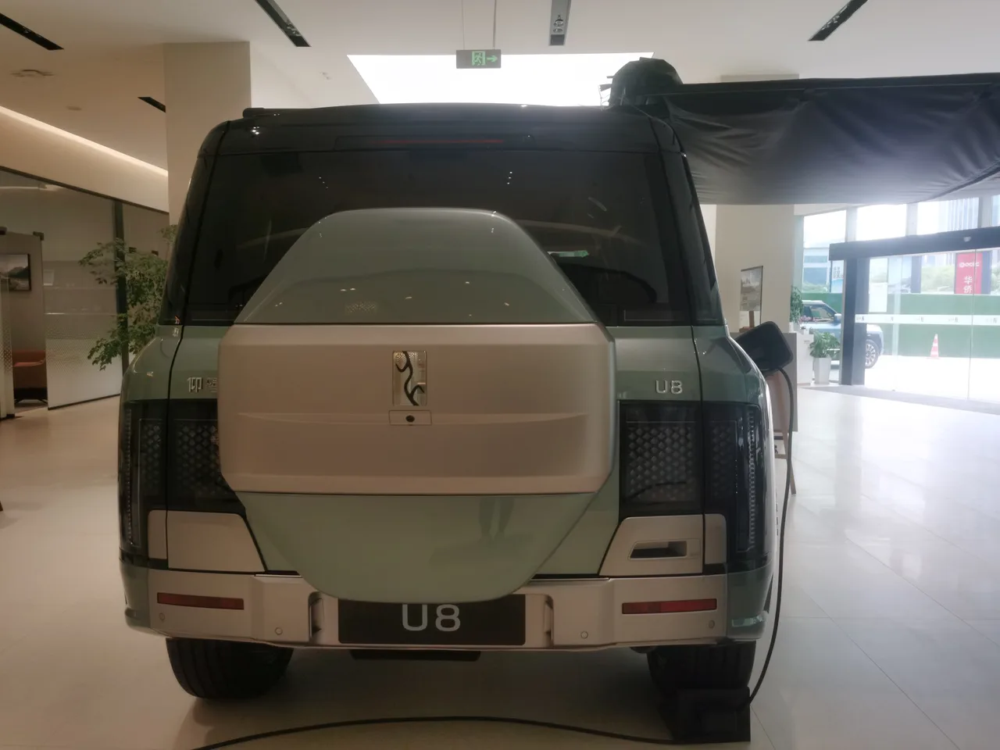

▲ BYD 양왕 U8 — 신형 4인승 프리미엄 에디션 'U8L'은 캐딜락 에스컬레이드·메르세데스-마이바흐 GLS 600급 크기로 중국에서 공개됐다
BYD의 초호화 브랜드 양왕(仰望)이 4인승 플래그십 SUV 'U8L'을 1,458,000위안, 우리 돈으로 약 2억7,000만원(21만5,000달러)에 공개했습니다. 전장 5,400mm, 전폭 2,049mm, 전고 1,921mm, 휠베이스 3,250mm에 달하는 이 차는 크기만 놓고 보면 캐딜락 에스컬레이드나 메르세데스-마이바흐 GLS 600에 견줄 만한 '초대형 프리미엄 SUV'로 소개되고 있습니다.
1. 에스컬레이드급 덩치, 4인승으로 설계한 이유
U8L의 가장 큰 특징은 좌석 구성입니다. 전장 5.4미터에 달하는 대형 SUV이면서도 좌석은 단 4개, 모두 캡틴시트로 채웠습니다. 일반적인 SUV라면 3열까지 7~8인승으로 뽑아 실용성을 극대화할 크기지만, 양왕은 반대의 선택을 했습니다. 뒷좌석 두 자리 모두를 퍼스트클래스 항공기 좌석처럼 독립적으로 설계하고, 그 대가로 탑승 정원을 절반 가까이 줄인 것입니다. 이는 '많이 태우는 차'가 아니라 '적게 태우고 극진히 모시는 차'로 포지셔닝하겠다는 의도로 읽힙니다.
2. 완충 9분... '플래시 차징'의 실체
파워트레인은 전기모터 4개와 56.58kWh 블레이드 배터리 조합입니다. 순수 전기 주행거리는 230km로 길지 않지만, 여기에 2.0L 엔진을 레인지 익스텐더로 얹어 복합 주행거리를 1,205km까지 늘렸습니다. 더 눈에 띄는 스펙은 충전 속도입니다. '플래시 차징' 기술로 배터리를 10%에서 70%까지 채우는 데 단 5분, 10%에서 97%까지는 9분이면 충분하다고 밝혔습니다. 순수 전기 항속거리가 짧은 대신 충전 속도로 보완하는 전략인 셈입니다.
| 항목 | 사양 |
|---|---|
| 전장·전폭·전고 | 5,400 × 2,049 × 1,921mm |
| 휠베이스 | 3,250mm |
| 배터리 | 56.58kWh 블레이드 배터리 |
| 순수전기 주행거리 | 230km |
| 복합 주행거리 | 1,205km |
| 급속충전(10→70%) | 5분 |
| 급속충전(10→97%) | 9분 |
| 가격 | 1,458,000위안(약 2억7,000만원) |

▲ 양왕 U8 실내 — U8L은 4개의 캡틴시트에 18단 마사지 기능과 골드 톤 마감을 더해 항공기 퍼스트클래스급 경험을 지향한다
3. 18단 마사지에 21.4인치 천장 스크린까지
실내 구성은 초호화 세단 못지않습니다. 전석에는 18단 마사지 기능이 들어갔고, 뒷좌석 캡틴시트에는 전동 레그레스트가 적용돼 다리를 완전히 펴고 앉을 수 있습니다. 골드 톤 소재로 마감된 인테리어와 운전석·중앙·조수석 앞에 배치된 대형 디스플레이 3개는 시각적으로도 화려함을 강조합니다. 압권은 천장에 장착된 21.4인치 후석 엔터테인먼트 스크린입니다. 뒷좌석에 앉은 탑승객이 마치 개인 영화관처럼 대형 화면을 올려다보며 콘텐츠를 즐길 수 있는 구조입니다.

▲ 양왕 U8 후면부 — 루프에 장착된 라이다와 40개의 센서를 앞세운 '갓츠 아이 A' 자율주행 보조 시스템이 탑재된다
4. 루프 라이다에 센서 40개, '갓츠 아이 A'
첨단 운전자 보조 시스템도 빠지지 않았습니다. 루프에 장착된 라이다와 전방위 고정밀 센서 40개를 앞세운 'God's Eye A(갓츠 아이 A)' 시스템이 적용됩니다. BYD가 최근 전 라인업에 걸쳐 강조하고 있는 자율주행 보조 브랜드로, 최상급 트림에 걸맞게 최고 사양이 탑재된 셈입니다. 초호화 SUV 시장에서도 이제 마사지 시트나 냉장고 못지않게 첨단 ADAS가 프리미엄의 기준으로 자리잡고 있음을 보여주는 대목입니다.
5. 그런데 왜 순수 전기가 아닌가
가장 흥미로운 지점은 역설적으로 파워트레인입니다. 최고급 전기차를 표방하는 브랜드가, 정작 순수 전기 주행거리는 230km에 그치고 2.0L 엔진을 레인지 익스텐더로 함께 얹었습니다. 이는 초대형·고중량 차체에서 배터리만으로 충분한 항속거리와 견인력을 확보하기가 여전히 쉽지 않다는 현실을 보여줍니다. 특히 오프로드 주행이나 장거리 이동이 잦은 초호화 SUV 세그먼트에서는, 순수 전기보다 엔진을 보조로 얹은 하이브리드형 구조가 아직은 더 현실적인 선택일 수 있습니다. 배터리 기술이 완전히 무르익기 전까지, 최상위 럭셔리 SUV 시장에서는 이런 '전기 우선, 엔진 보조'형 절충안이 당분간 이어질 가능성이 높습니다.